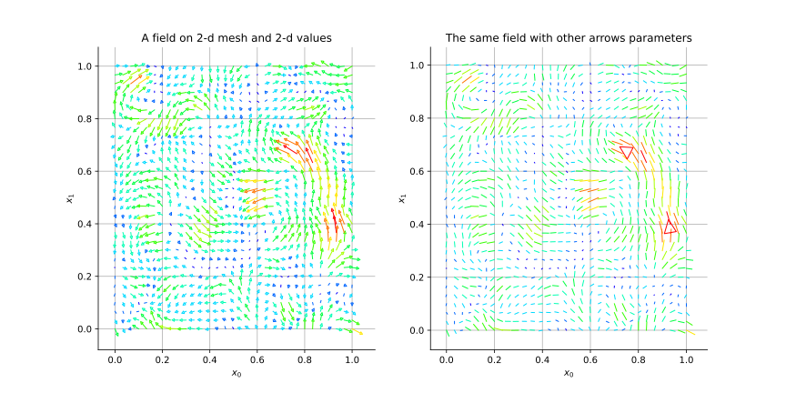
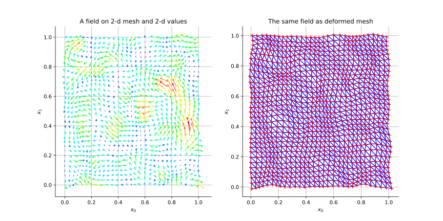
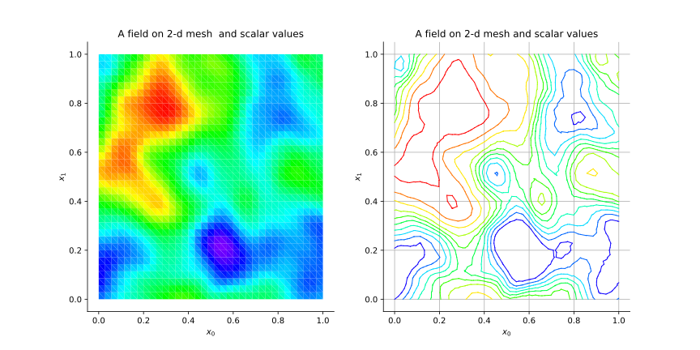
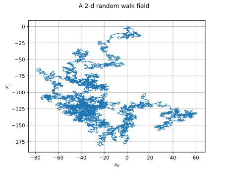
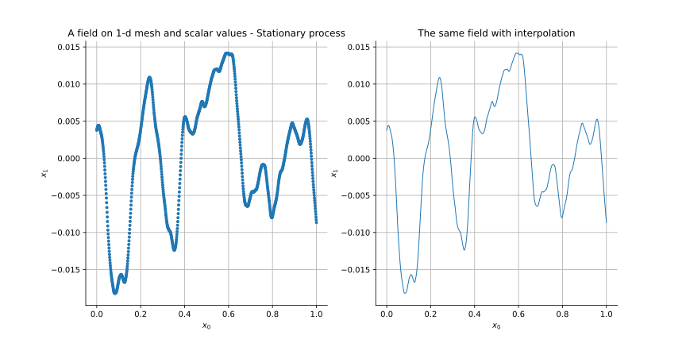
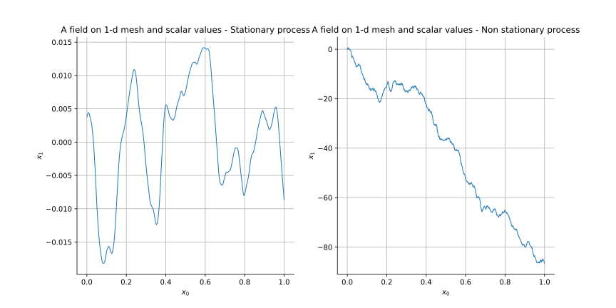
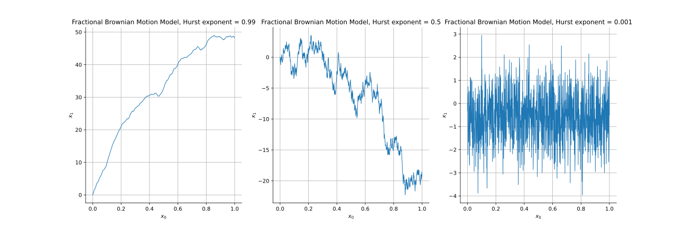

Note
Go to the end to download the full example code.
Draw a field¶
In this example, we show the different ways of drawing a Field
that is a realization of a process.
We consider the following fields:
Case 1: A field defined on a 2-d mesh with 2-d values,
Case 2: A field defined on a 2-d mesh with scalar values,
Case 3: A field defined on a 1-d mesh with 2-d values,
Case 4: A field defined on a 1-d mesh with scalar values.
import openturns as ot
import openturns.viewer as otv
# sphinx_gallery_thumbnail_number = 2
Case 1: A field defined on a 2-d mesh with 2-d values¶
We consider a normal process defined on ![\cD = [0,1]^2]() , with 2-d output values, defined by a
covariance function which is a
, with 2-d output values, defined by a
covariance function which is a TensorizedCovarianceModel built as the tensorization of
two MaternModel covariance functions.
The domain ![\cD]() is discretized by a regular grid, using the class
is discretized by a regular grid, using the class
IntervalMesher.
cov_model = ot.TensorizedCovarianceModel([ot.MaternModel([0.1] * 2, [0.01], 2.5)] * 2)
mesh = ot.IntervalMesher([30] * 2).build(ot.Interval([0.0] * 2, [1.0] * 2))
normal_proc = ot.GaussianProcess(cov_model, mesh)
field = normal_proc.getRealization()
We first draw the field with arrows fixed on each vertex of the mesh.
g_1 = field.draw()
g_1.setTitle(r'A field on 2-d mesh and 2-d values')
g_1.setXTitle(r'$x_0$')
g_1.setYTitle(r'$x_1$')
In order to change the arrows, we can modify the ResourceMap keys associated to the
class Field.
ot.ResourceMap.SetAsScalar('Field-ArrowRatio', 0.05)
ot.ResourceMap.SetAsScalar('Field-ArrowScaling', 0.8)
g_2 = field.draw()
g_2.setTitle('The same field with other arrows parameters')
g_2.setXTitle(r'$x_0$')
g_2.setYTitle(r'$x_1$')
We can compare both figures.
grid = ot.GridLayout(1, 2)
grid.setGraph(0, 0, g_1)
grid.setGraph(0, 1, g_2)
view = otv.View(grid)

We can also use the output values to deform the initial mesh and draw the deformed mesh. First, we recover the default values of the ResourceMap keys.
ot.ResourceMap.SetAsScalar('Field-ArrowRatio', 0.01)
ot.ResourceMap.SetAsScalar('Field-ArrowScaling', 1)
deformed_field = field.asDeformedMesh()
g_def = deformed_field.draw()
g_def.setTitle('The same field as deformed mesh')
g_def.setXTitle(r'$x_0$')
g_def.setYTitle(r'$x_1$')
g_def.setLegendPosition('')
We can compare both figures.
grid = ot.GridLayout(1, 2)
grid.setGraph(0, 0, g_1)
grid.setGraph(0, 1, g_def)
view = otv.View(grid)

Case 2: A field defined on a 2-d mesh with scalar values¶
We consider a normal process defined on , with scalar output values, defined by a
covariance function which is a MaternModel.
The domain is discretized by a regular grid, using the class IntervalMesher.
cov_model = ot.MaternModel([0.15] * 2, [0.01], 2.5)
mesh = ot.IntervalMesher([35] * 2).build(ot.Interval([0.0] * 2, [1.0] * 2))
normal_proc = ot.GaussianProcess(cov_model, mesh)
field = normal_proc.getRealization()
We draw the field by filling each cell of the mesh with a color.
g_1 = field.draw()
g_1.setTitle('A field on 2-d mesh and scalar values')
g_1.setXTitle(r'$x_0$')
g_1.setYTitle(r'$x_1$')
We can also draw iso-value lines of the output values using interpolation.
g_2 = field.drawMarginal(0, True)
g_2.setTitle('A field on 2-d mesh and scalar values')
g_2.setXTitle(r'$x_0$')
g_2.setYTitle(r'$x_1$')
g_2.setLegendPosition('')
We can compare both figures.
grid = ot.GridLayout(1, 2)
grid.setGraph(0, 0, g_1)
grid.setGraph(0, 1, g_2)
view = otv.View(grid)

Case 3: A field defined on a 1-d mesh with 2-d values¶
We consider a RandomWalk process which distribution is the normal
distribution of dimension 2 with zero mean and identity covariance matrix.
The process is defined on ![\cD = [0,1]]() which is discretized by a regular grid, using
the class
which is discretized by a regular grid, using
the class RegularGrid.
dist_rw = ot.Normal(2)
origin = dist_rw.getMean()
N = 10000
step = 1.0 / N
mesh = ot.RegularGrid(0, step, N)
rw_process = ot.RandomWalk(origin, dist_rw, mesh)
field = rw_process.getRealization()
We draw the field by interpolating the output vectors.
g = field.draw()
g.setTitle('A 2-d random walk field')
g.setXTitle(r'$x_0$')
g.setYTitle(r'$x_1$')
view = otv.View(g)

Case 4: A field defined on a 1-d mesh with scalar values¶
We consider a normal process defined on , with scalar output values, defined by a
covariance function which is a MaternModel.
The domain is discretized by a regular grid, using IntervalMesher.
This process is stationary.
cov_model = ot.MaternModel([0.05], [0.01], 2.5)
mesh = ot.IntervalMesher([1000]).build(ot.Interval(0.0, 1.0))
normal_proc = ot.GaussianProcess(cov_model, mesh)
field = normal_proc.getRealization()
We draw its trajectory without interpolating the output values.
g_1 = field.draw()
g_1.setTitle('A field on 1-d mesh and scalar values - Stationary process')
g_1.setXTitle(r'$x_0$')
g_1.setYTitle(r'$x_1$')
We can also interpolate the output values.
g_2 = field.drawMarginal(0, True)
g_2.setTitle('The same field with interpolation')
g_2.setXTitle(r'$x_0$')
g_2.setYTitle(r'$x_1$')
g_2.setLegendPosition('')
We can compare both figures.
grid = ot.GridLayout(1, 2)
grid.setGraph(0, 0, g_1)
grid.setGraph(0, 1, g_2)
view = otv.View(grid)

We consider now a normal process which is not stationary. We use the
FractionalBrownianMotionModel:
when the Hurst exponent is close to 1, the trajectory is smooth,
when the Hurst exponent is equal to 1/2, the trajectory is Brownian motion (Wiener process),
when the Hurst exponent is close to 0, the process tends to a White noise process.
scale = 0.01
amplitude = 1.5
hurst_exponent = 0.75
cov_model = ot.FractionalBrownianMotionModel(scale, amplitude, hurst_exponent)
mesh = ot.IntervalMesher([1000]).build(ot.Interval(0.0, 1.0))
normal_proc = ot.GaussianProcess(cov_model, mesh)
field = normal_proc.getRealization()
g_3 = field.drawMarginal(0, True)
g_3.setTitle('A field on 1-d mesh and scalar values - Non stationary process')
g_3.setXTitle(r'$x_0$')
g_3.setYTitle(r'$x_1$')
We can compare both processes.
grid = ot.GridLayout(1, 2)
g_2.setTitle('A field on 1-d mesh and scalar values - Stationary process')
grid.setGraph(0, 0, g_2)
grid.setGraph(0, 1, g_3)
view = otv.View(grid)

We draw here a trajectory from a FractionalBrownianMotionModel with different Hurst exponent.
grid = ot.GridLayout(1, 3)
hurst_exponent_list = [0.99, 0.50, 0.001]
for index, hurst_exponent in enumerate(hurst_exponent_list):
cov_model = ot.FractionalBrownianMotionModel(scale, amplitude, hurst_exponent)
normal_proc = ot.GaussianProcess(cov_model, mesh)
field = normal_proc.getRealization()
g = field.drawMarginal(0, True)
g.setTitle(r'Fractional Brownian Motion Model, Hurst exponent = ' + str(hurst_exponent))
g.setXTitle(r'$x_0$')
g.setYTitle(r'$x_1$')
grid.setGraph(0, index, g)
view = otv.View(grid)

Display all figures
otv.View.ShowAll()